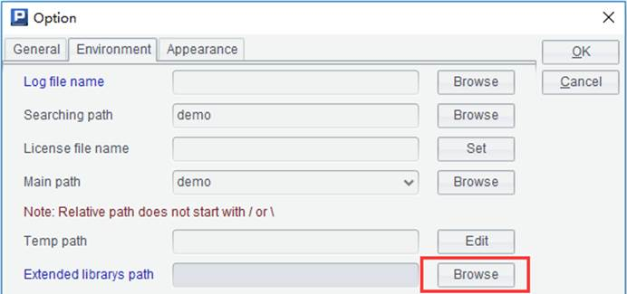
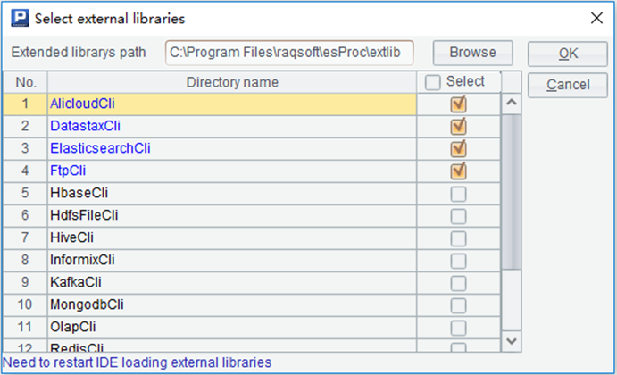

Click ��Tool��- ��Options��-��Environment��on the menu to pop up the following window:

Click Browse button to pop up the Select external libraries window, as shown below:

Click Browse button to choose the directory holding the external library folder. By default, the folder is placed under installation directory\esProc\extlib. An external library folder should contain the related Raqsoft core jar and the third-party jar files for enabling the current external library. In the above window, select the external library you want to connect and click OK. You need to restart the IDE to make the setting take effect.
Note:
1. Users can change the folder and directory holding the external library files. We suggest you not choose a directory with too many subdirectories in case that the loading of directory is slow; and not place jar files for different external libraries in the same directory in case that unnecessary errors happen due to jar conflicts.
2. Users can manually edit configuration file /esProc/config/raqsoftConfig.xml under installation directory to add an external library directory when trying to execute a dfx file from a command line on the non-GUI interface, as shown below:
<Esproc>
�� ��
// Configure path of the external library folder
<extLibsPath>D:\raqsoft\esProc\extlib</extLibsPath>
<importLibs>
// Configure path of the external library folder
<lib>FtpCli</lib>
</importLibs>
</Esproc>